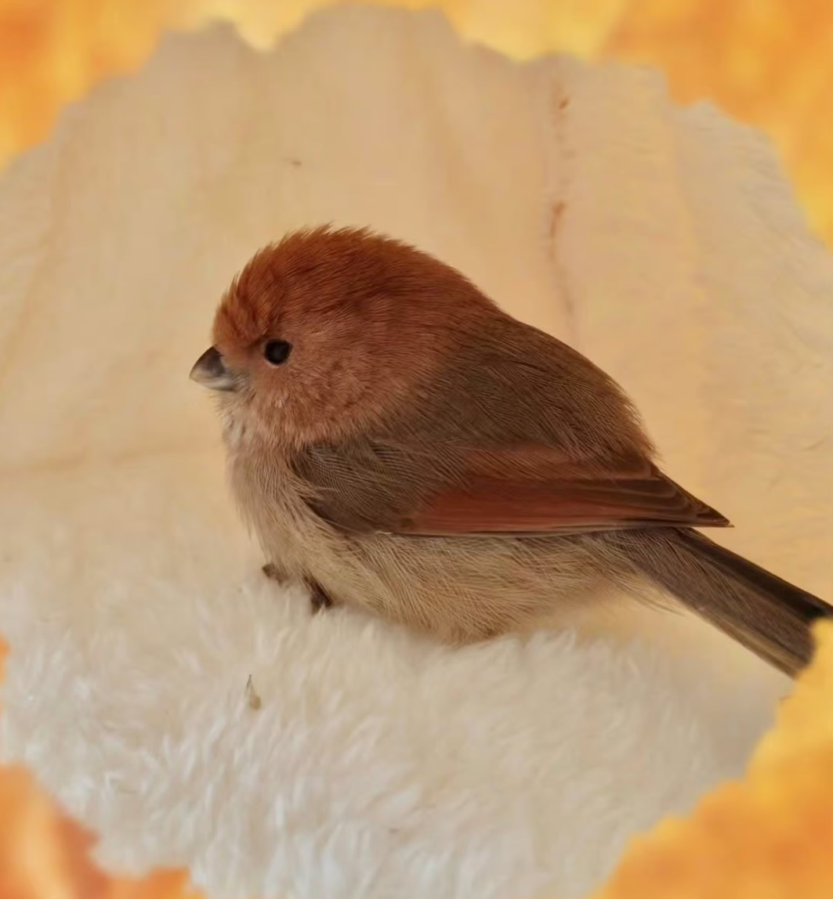

棕头鸦雀是雀形目莺鹛科棕头鸦雀属鸟类，又称粉红鹦嘴、黄滕、红头仔。体色整体呈棕粉褐色。头部粉褐色，头顶和飞羽棕红色，背、翼上覆羽和腰部棕褐色，尾暗褐色，颏、喉和胸部粉棕色且具细的暗棕色纵纹，腹部及尾下覆羽灰褐色；虹膜深褐色；嘴粗短，灰褐色而尖端色浅；脚棕褐色或铅褐色。雌雄同型。
棕头鸦雀主要分布于俄罗斯远东、朝鲜、越南北部和缅甸东北部。在中国分布于东北、华北、华中、华东、华南以及西南部分地区，包括台湾。栖息于中、低山阔叶林和混交林林缘灌丛或山顶灌丛，也见于公园、苗圃和农田。成对或者成小群、秋冬季节集大群活动。以各类昆虫等动物性食物为主，也吃果实和种子等植物性食物。繁殖期为4-8月，每窝产卵4-5枚，孵化期为13-14天。
棕头鸦雀是比较常见而数量又多的一种小形鸟类，因食物中害虫所占的，比例较大，所以是一种值得重视的益鸟。又因体小活泼，喜结群，捕捉也比较容易，可作为笼养对象，目前一些动物园已笼养展览。属于中国国家保护的有重要生态、科学、社会价值的陆生野生动物。